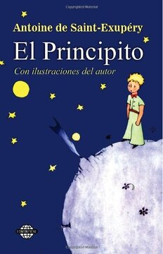

Reseñas de Libros
Descubre algunas de los libros más leídos y recomendados del último tiempo.

El cuento de la criada
Una obra maestra de la ciencia ficción que explora el poder, la religión y la ecología en un mundo desértico lleno de intrigas políticas.

El Principito
Un cuento filosófico que nos recuerda lo esencial de la vida a través de los ojos de un niño que viaja por planetas llenos de simbolismo.

Cien años de soledad
La historia mágica y trágica de la familia Buendía en Macondo, un relato vibrante de realismo mágico creado por Gabriel García Márquez.